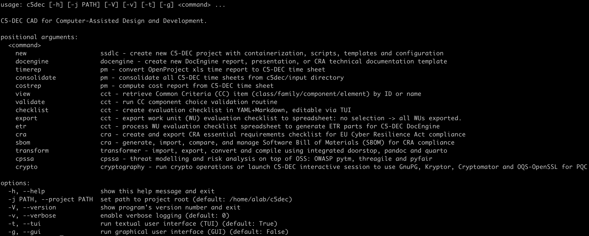

Common Criteria Toolbox
Browse SFR/SAR content, generate evaluation checklists, and work with component-level evidence.
CCT Browser
Eval checklist
SFR/SAR navigation
C5-DEC CAD unifies Common Criteria tooling, SSDLC traceability, compliance workflows, cyber-physical system security assessment, cryptography, and resource management in one repository-centric platform. This page gives stakeholders a fast visual tour of the product capabilities.

Browse SFR/SAR content, generate evaluation checklists, and work with component-level evidence.
Manage artifact repositories and item relations, then import/export/convert/publish technical data.
Visualize coverage, gaps, and link structures through browser dashboards and interactive graph reports.
Generate styled technical reports and presentations using Quarto templates and ETR pipelines.
Support modern cybersecurity compliance and threat analysis with dedicated integrated workflows.
Process time/cost reports, tag documentation, and monitor activity traces for operational readiness.
Establish requirements and architecture artifacts with structured item repositories.
Inspect CC content, threat models, and compliance obligations through dedicated modules.
Create and validate traceability links across SRS, ARC, SWD, TCS, and TRP items.
Execute test and evaluation workflows and consolidate evidence from outputs.
Generate reports, traceability dashboards, and final deliverables for stakeholders.